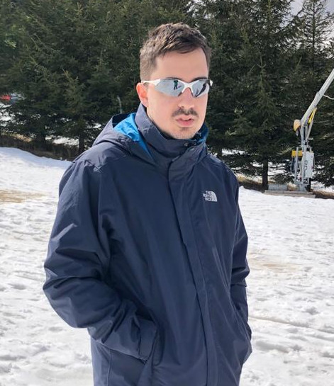

Algorithms and Complexity
| |
Welcome to the website of the Algorithms and Complexity research group at the University of Bristol.
Our Research Interests. Our current research focusses on:
- String Algorithms (Raphaël Clifford)
- Algorithmic theory for processing massive data sets, streaming algorithms, communication complexity, theory of distributed computing (Christian Konrad)
- Counting complexity, parameterised complexity, random algorithms, random processes on networks, graph theory (John Lapinskas)
News
| October 2021 | We welcome our new Research Associate Dr Pavel Dvorak to the group! |
| September 2021 | We welcome our new PhD student Cezar Alexandru to the group! |
| August 2021 | PhD student Kheeran Naidu presented his recent work at APPROX'21. Check out his presentation here. |
| July 2021 | Group webpage goes online! |
People
| Core Faculty | ||
|---|---|---|
 Raphaël Clifford |
(Head of Group) |
 John Lapinskas |
| Postdocs |
|---|
Hosted by Christian Konrad |
| PhD Students | |
|---|---|
|  Supervisor: Christian Konrad |
Supervisor: Christian Konrad |
Publications (since 2020)
2022- Sanjeev Khanna, Christian Konrad, "Optimal Bounds for Dominating Set in Graph Streams", 13th Innovations in Theoretical Computer Science Conference (ITCS 2022).
- Leslie Ann Goldberg, Joost Jorritsma, Júlia Komjáthy, John Lapinskas, "Increasing efficacy of contact-tracing applications by user referrals and stricter quarantining", PLOS ONE (2021)
- Júlia Komjáthy, John Lapinskas, Johannes Lengler, "Stopping explosion by penalising transmission to hubs in scale-free spatial random graphs", Annales de l’Institut Henri Poincaré (B) Probabilités et Statistiques (2021)
- Holger Dell, John Lapinskas, "Fine-grained reductions from approximate counting to decision", ACM Transactions on Computation Theory (2021), preliminary version in Proceedings of the 50th Annual ACM SIGACT Symptosium on Theory of Computing (STOC 2018)
- Christian Konrad, Kheeran Naidu, "On Two-pass Streaming Algorithms for Maximum Bipartite Matching", Proceedings of the 24th International Workshop on Approximation Algorithms for Combinatorial Optimization Problems (APPROX 2021).
- Christian Konrad, "Frequent Elements with Witnesses in Data Streams", 40th ACM SIGMOD-SIGACT-SIGAI Symposium on Principles of Database Systems (PODS 2021).
- Michael Barlow, Christian Konrad, Charana Nandasena, "Streaming Set Cover in Practice", Symposium on Algorithm Engineering and Experiments (ALENEX 2021).
- Holger Dell, John Lapinskas, Kitty Meeks, "Approximately counting and sampling small witnesses using a colourful decision oracle", ACM-SIAM Symposium on Discrete Algorithms (SODA 2020)
- Lidiya Binti Khalil, Christian Konrad, "Constructing Large Matchings via Query Access to a Maximal Matching Oracle", 40th IARCS Annual Conference on Foundations of Software Technology and Theoretical Computer Science (FSTTCS 2020).
- Jacques Dark, Christian Konrad, "Optimal Lower Bounds for Matching and Vertex Cover in Dynamic Graph Streams", 35th Computational Complexity Conference (CCC 2020).
- Artur Czumaj, Christian Konrad, "Detecting cliques in CONGEST networks", Distributed Computing (2020).
- Rajiv Gandhi, Magnús M. Halldórsson, Hoon Ho, Christian Konrad, Guy Kortsarz, "Radio Aggregation Scheduling", Theoretical Computer Science (2020).
- Magnús M. Halldórsson, Christian Konrad, Tigran Tonoyan, "Limitations of Current Wireless Scheduling Algorithms", Theoretical Computer Science (2020).
- Magnús M. Halldórsson, Christian Konrad, "Improved Distributed Algorithms for Coloring Interval Graphs with Application to Multicoloring Trees", Theoretical Computer Science (2020).
Contact
| Algorithms and Complexity research group School of Computer Science, Electrical and Electronic Engineering, and Engineering Maths (SCEEM) Faculty of Engineering University of Bristol |
Merchant Venturers Building Woodland Road BS8 1UB, Bristol United Kingdom |
Group contact email: christian.konrad@bristol.ac.uk